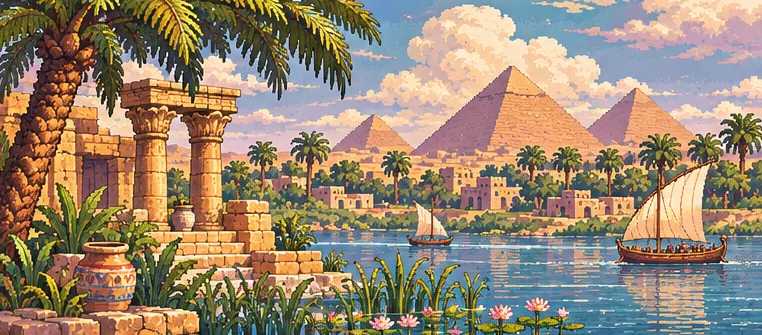
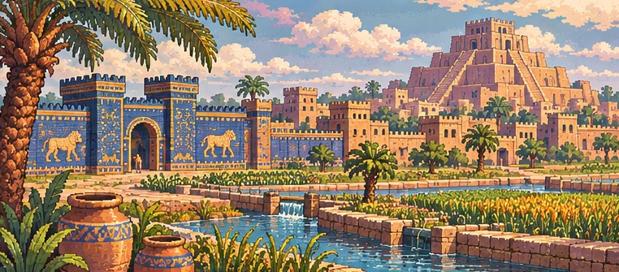
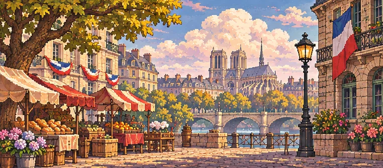
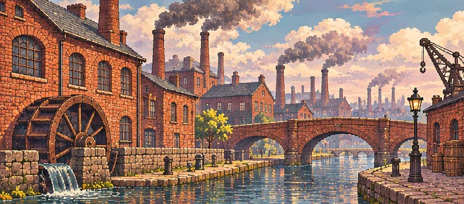

Egito AntigoMergulho no NiloA oficina dos escribasAs pirâmides de GizéO templo de KarnakVale dos ReisAlexandria
MesopotâmiaOs rios Tigre e EufratesUruk e a escritaO zigurate de UrBabilônia de HamurábiNínivePorta de Ishtar
Revolução FrancesaParis antes de 1789VersalhesA praça da BastilhaAssembleia NacionalA ConvençãoO Diretório
Revolução IndustrialAs oficinas têxteisManchesterMáquinas a vaporO canal comercialA ferroviaCidade industrial